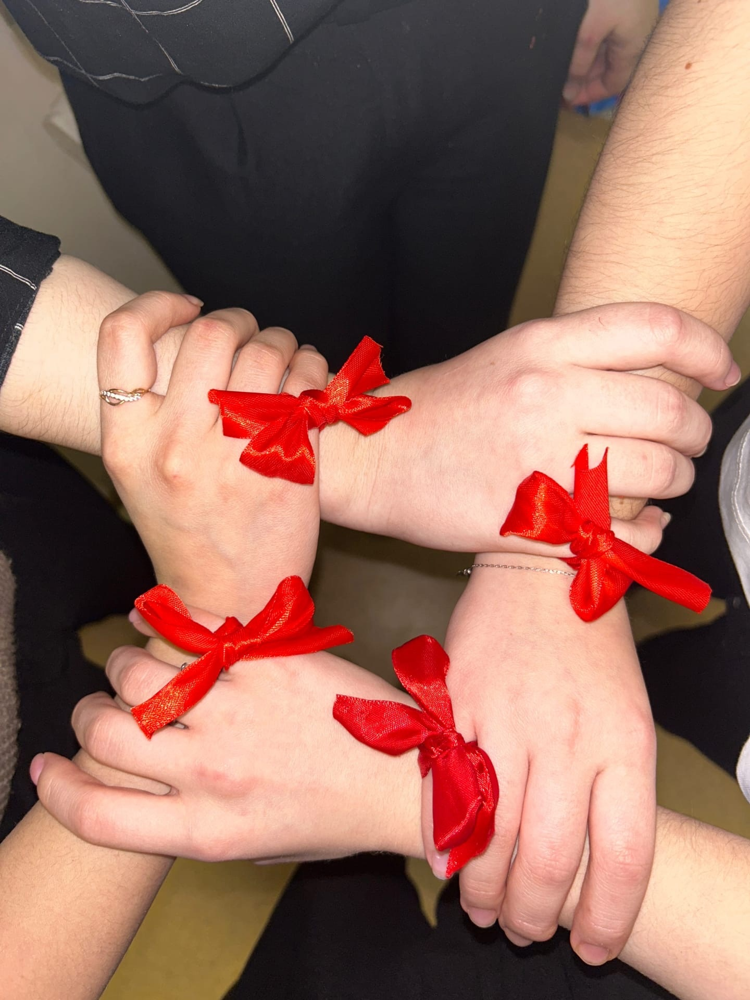
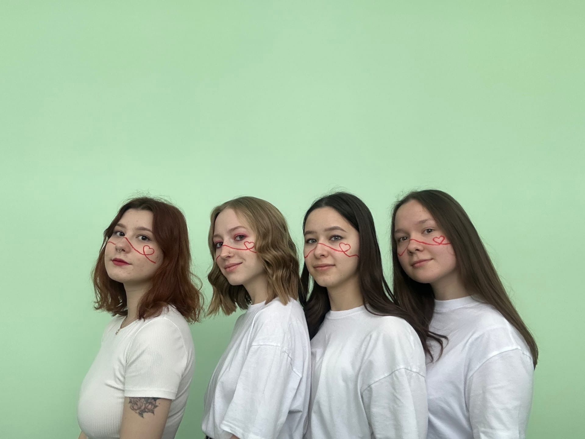
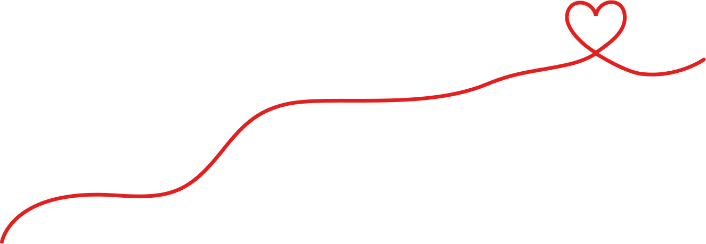
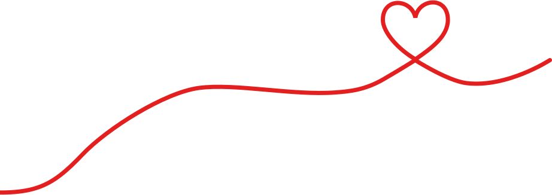
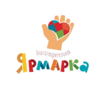
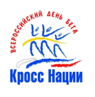
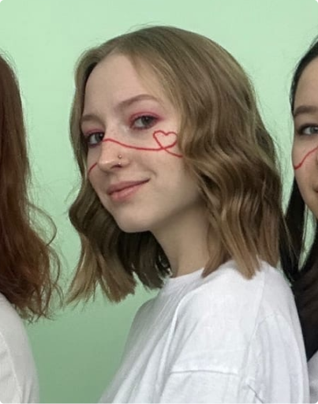
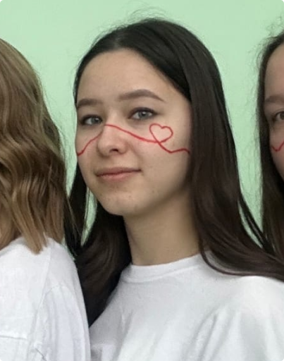
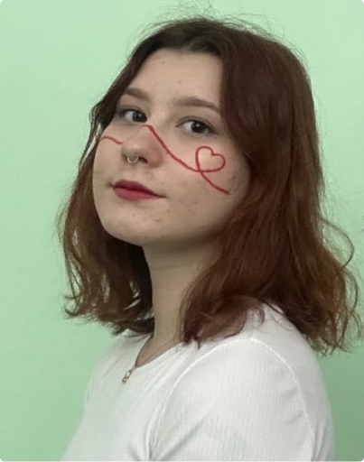
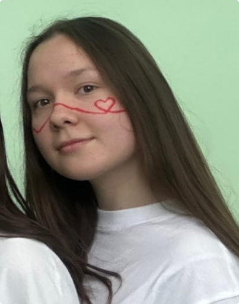

Голосуй за партию “Вместе”, если хочешь быть услышанным


О нас


«Вместе» - это левоцентристская политическая партия, придерживающаяся идеологии социал-демократии. Социал-демократизм – политическая идеология, провозгласившая своим идеалом демократический социализм, базовыми ценностями которого являются свобода, справедливость и солидарность, основанные на принципах политической, экономической, социальной и международной демократии.
Особенностями этой идеологии выступают:
- Отказ от насильственных методов борьбы за власть;
- Приоритет таких ценностей, как демократия, социальная справедливость, солидарность, свобода и др.;
- Приоритет смешанной экономики;
- Социальные гарантии малоимущим и нетрудоспособным гражданам;
- Государственную поддержку культуре, образованию, здравоохранению;
- Плюрализм мнений, многопартийность, идеи правового государства и др.
Программа
Мероприятия
Выступление на каналах организаций теле- и радиовещания и публикации в периодических печатных изданиях
· Например, на телеканале РЕН ТВ, ТНВ, Россия 1, 1 канал, Домашний, НТВ, и др.
· Публикации в печатных изданиях, таких как "pro Город", "Pulse Казань" и др.
· Радиовещания на каналах ''Авторадио", "Европа плюс", "Русское радио", "Business FM" и др.
Организация публичных мероприятий агитационного характера:
· 24 сентября- участие в благотворительном забеге "Кросс нации - 2022"
· Организация мероприятия, направленного на знакомство с партией
· Посещение приюта для собак «Преданные сердца Казани»
· Посещение Дербышкинского детского дом-интернат для умственно-отсталых детей
· 16 октября участие в открытии новой секции для особенных детей. В Центре бокса и настольного тенниса открылась секция по футболу "Облачко" для детей с особенностями
· 28 октября участие в высадке 12 тысяч сеянцев дуба черешчатого на территории Кутлу-Букашского участкового лесничества (Рыбно-Слободский район) в рамках осенней акции всероссийского проекта "Посади Лес".
· Участие 29 ноября (в Международный день благотворительности) на благотворительной ярмарке


Публикация и распространение печатных агитационных аудиовизуальных и других материалов
· Раздача агитационных листовок
· Реклама в транспорте Казани
· Реклама на больших биллбордах
· Реклама на городских афиша
Видеоконтент на платфоре "Вконтакте". Размещение обучающих видео, видео рекламу; знакомство в участниками партии, предвыборной программой, с предстоящими мероприятиями.
Реклама своего сайта на просторах интернета.
Команда
Наша команда состоит из:

Батуева Елизавета -
Лидер, разработчик программы

Гаскарова Рената - Технический специалист

Почуева Анастасия - Имиджемейкер

Минегалиева Айсылу - Маркетолог
Функции команды:
Батуева Е.Ю:
- Разработка программы;
- Помощь в разработке имиджа;
- Помощь в разработке сайта;
- Помощь в разработке агитационного направления.
Гаскарова Р.Ф.:
- Разработка сайта;
- Помощь в разработке имиджа;
- Помощь в разработке агитационного направления;
- Помощь в разработке программы.
Минегалиева А.А.:
- Разработка агитационного направления;
- Помощь в разработке имиджа;
- Помощь в разработке сайта;
- Помощь в разработке программы.
Почуева А.В.:
- Разработка имиджа;
- Помощь в разработке сайта;
- Помощь в разработке агитационного направления;
- Помощь в разработке программы.